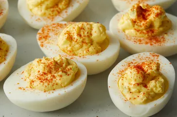

Simple Deviled Eggs

Description
These deviled eggs are delicious for Easter brunch and are always popular at our
holiday parties. Adjust the amount of salt and sugar in this recipe to suit your
taste. I like to add onion and celery for a little more texture.
Ingredients
- Eggs: This recipe yields 12 deviled egg halves, so you will need six boiled eggs.
- Mayonnaise: Mayonnaise makes the filling extra creamy.
- Sugar: A teaspoon of white sugar lends a hint of sweetness.
- Vinegar: A teaspoon of white vinegar, meanwhile, cuts the sweetness with acidity.
- Mustard: Use store-bought prepared mustard or homemade yellow mustard
- Vegetables: You will need an onion and celery.
- Seasonings: These deviled eggs are seasoned with salt and paprika.
Steps
Cut the boiled eggs in half and remove the yolks. Reserve the whites.
Mash the yolks with a fork and add the remaining ingredients.
Stuff or pipe the filling into the egg white halves.